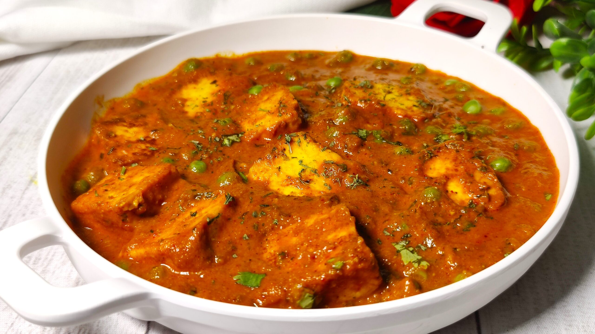

Home
Matar Paneer

Description
Matar paneer recipe is a popular Indian Curry dish made with green peas and Paneer (Indian cottage cheese) in a base of onions, tomatoes, cashews, spices and herbs. The recipe hails from the versatile Northern Indian cuisine that has many different (and delicious) variations.
Ingredients
FOR ONION TOMATO GRAVY BASE:
- 2 tbsp oil
- 2 onion, sliced
- 4 clove garlic, crushed
- 2 inch ginger
- 4 tomato, sliced
- 2 tbsp cashew
FOR CURRY:
- 2 tbsp oil
- 1 tsp ghee
- 1 tsp cumin
- ½ inch cinnamon
- 3 pods cardamom
- 2 chilli, sliced
- ½ tsp turmeric
- 1 tsp chilli powder
- ½ tsp coriander powder
- ½ tsp cumin powder
- ½ tsp garam masala
- 3 cup water
- 1 tsp salt
- 1½ cup peas
- 200 grams paneer, cubed
- 2 tbsp cream
- 1 tsp kasuri methi, crushed
- 2 tbsp coriander, chopped
Steps
- Firstly, in a pan heat 2 tbsp oil. add 2 onion, 4 cloves garlic, and 2 inch ginger.
- Saute until the onions turn golden brown.
- Add 4 tomatoes, 2 tbsp cashew, and saute until the tomato turn soft and mushy.
- Cool completely, and transfer to a mixer jar.
- Grind to smooth paste without adding water.
- To prepare curry, heat 2 tbsp oil. add 1 tsp ghee, 1 tsp cumin, ½ inch cinnamon, 3 pods cardamom and 2 chilli. saute until the spices turn aromatic.
- Keeping the flame on low, add ½ tsp turmeric, 1 tsp chilli powder, ½ tsp coriander powder, ½ tsp cumin powder, and ½ tsp garam masala.
- Saute until the spices turn aromatic.
- Now add prepared gravy and cook well.
- Keep cooking until the oil separates from the gravy base.
- Further, add 3 cup water and 1 tsp salt.
- Mix well adjusting the consistency of gravy.
- Further, add 1½ cup peas and 200 grams paneer. mix well.
- Cover and cook for 5 minutes or until the peas are cooked well.
- Add 2 tbsp cream, 1 tsp kasuri methi, and 2 tbsp coriander.
- Finally, enjoy matar paneer with roti or rice.